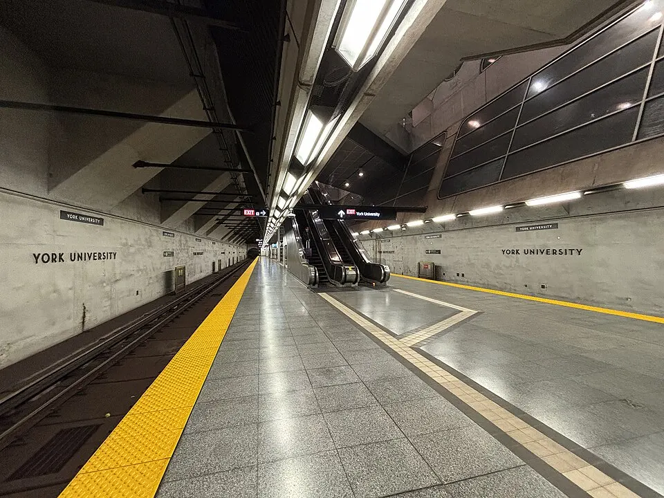

Signal
SignalStation atlas / York University
Station history
York University


Station history
Doors Open Toronto visitors toured the station months before the first passenger trains. The wing-shaped entrance was designed to direct daylight down into the concourse.
The station opened beneath the university commons. Its entrances face York Lanes and the Accolade East Building, placing the subway within walking distance of the lecture halls.